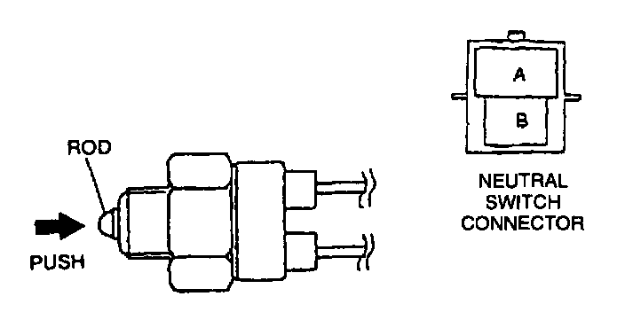
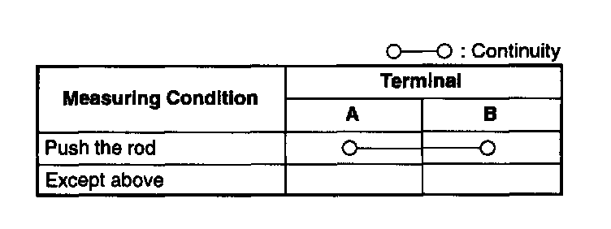

Neutral Safety Switch: Testing and Inspection
Inspection of ContinuityNOTE:
- Perform the following test only when detected.
1. Disconnect the negative battery cable.
2. Remove the neutral switch.

3. Inspect for continuity between the neutral switch terminals by using an ohmmeter.

Specification
4. If not as specified, replace the neutral switch. If neutral switch is okay but PID value is out of specification, inspect as follows:
Open circuit
- Power circuit (Neutral switch connector terminal A and PCM connector terminal 1V through common connector.)
- Ground circuit (Neutral switch connector terminal B and ground through common connector.)
Short circuit
- Neutral switch connector terminal A and PCM connector terminal 1V through common connector to ground.
5. Reconnect the neutral switch connector.